Qualified reconstruction · October 21, 2026
Inside the MRF
It learned changing coefficients. It did not reproduce the paper’s gain. This report shows what was trained, where the loss comes from, and what the fitted forest actually does.
Target: one-quarter-ahead Δlog unemployment. Evaluation: 48 quarters, 2003Q1–2014Q4. Six expanding refits, 100 trees per fit, three seeds. No Jev or LLM forecast evaluation has run.
The readout
Fixed FA-AR: 0.833 RMSE / AR(4). MRF: 0.852 / 0.829 / 0.824. Paper MRF: 0.72. The declared joint agreement check fails. All seeds are retained.
Before 2008, the forest helps. Its extra 2009Q1 loss and its later weak gains offset that benefit. The post-hoc same-equation OLS control also beats every MRF seed on RMSE. But all forest seeds improve MAE: average absolute misses are smaller, while the largest misses hurt squared-error performance. This locates the tradeoff; it does not prove its cause.
Read this before interpreting the charts
- All new diagnostic views and the same-equation OLS control are post-hoc. No settings, seeds, tree count or evaluation dates were selected from them.
- The archive has 247 of the paper’s original 248 indicators. The complete original author caller is unavailable. These remain qualified reconstructions, not an exact replication or real-time-vintage forecasting study.
- Training curves come from a newly instrumented replay of the first refit, seed 101. Every final coefficient and forecast must match the original saved output. No original per-tree log existed.
- The source’s split-omitted rows can still enter terminal regressions. We do not label their predictions as clean OOB validation. There is no new independent validation set here.
- Seed spread and tree dispersion are not predictive uncertainty or calibrated confidence intervals. Coefficients and factor contributions are not causal effects.
- PCA bases are refitted. Factor signs and rotations can change across refits. Do not read a factor coefficient across boundaries as the same identified economic quantity.
- Tree usage is frequency, not feature importance. Calendar subperiods and worst-quarter rankings are descriptive, not new benchmark definitions.
Training
What training actually does
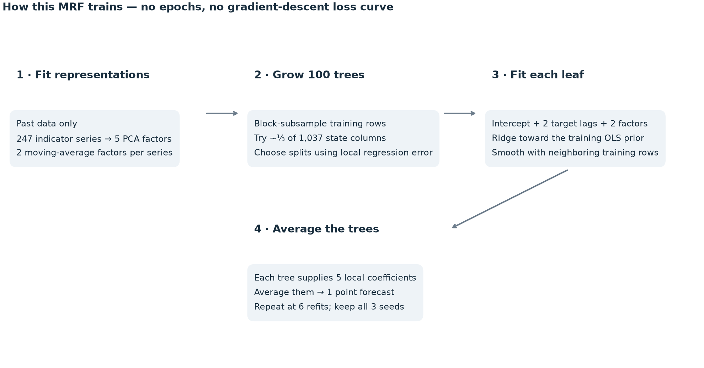
The 1,037 state variables choose regimes; the forecast equation has only five coefficients. The forest averages separately grown trees. It does not optimize one neural-network loss over epochs. PNG · SVG
What the losses mean
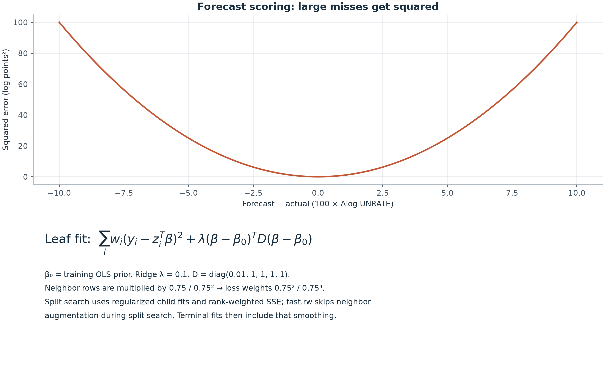
Top is the actual forecast scoring rule, not a fitted curve. Bottom summarizes the local leaf objective in standardized units. The source's split criterion differs from its terminal-fit objective; there is no single globally minimized training loss. PNG · SVG
Training versus forecasting calendar
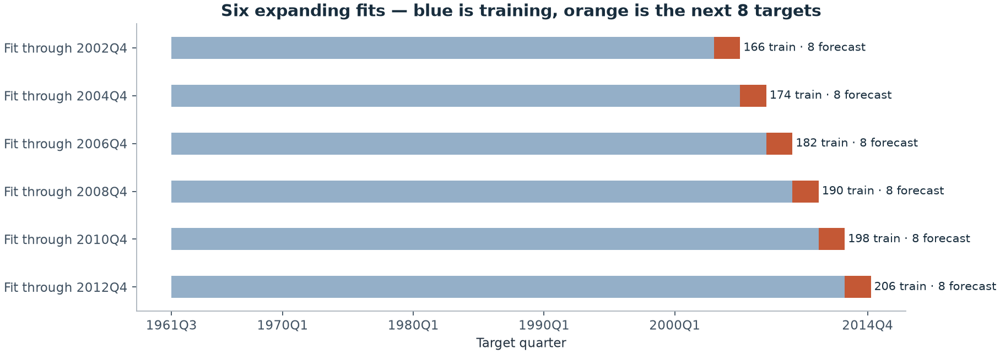
Representations stop at the last training origin, one quarter before the training target cutoff. Forecasting is h=1 with observed lag updates, not an eight-step recursive path. The model is refitted every two years. PNG · SVG
The large state and the small equation
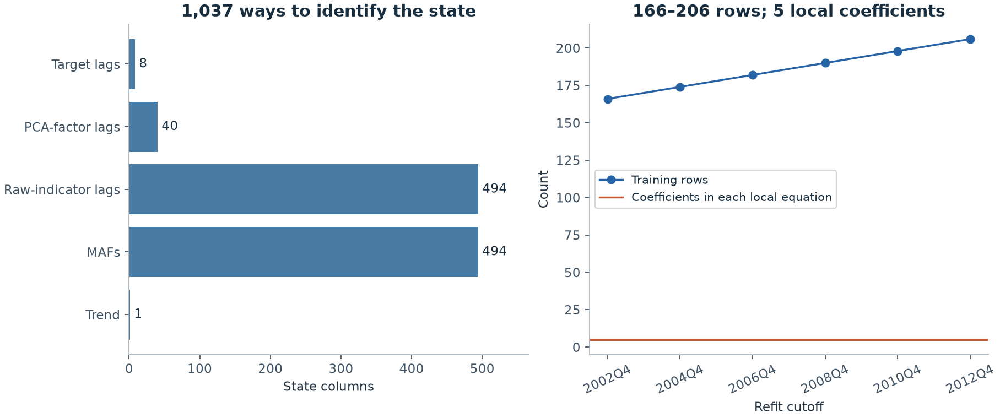
The state is large relative to the training history. Trees select splits rather than fitting 1,037 regression slopes. This is a capacity/noise concern, not proof that overfitting caused the forecast gap. PNG · SVG
Recorded preprocessing diagnostics
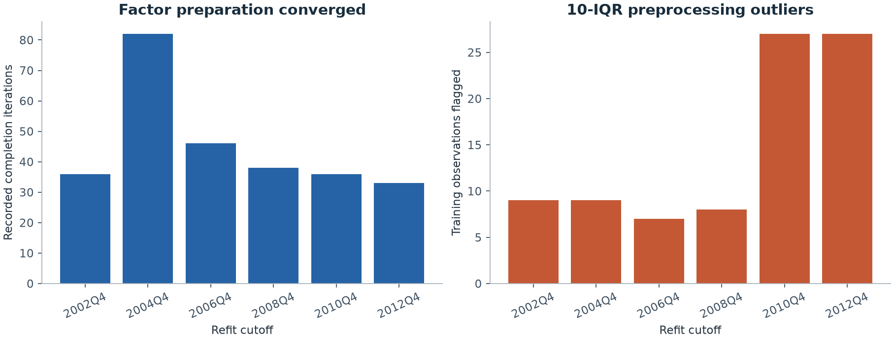
These are recorded counts, not per-iteration loss histories. All six state rebuilds agreed exactly with the frozen inputs. The original run did not retain a factor-completion objective trajectory. PNG · SVG
Forecasts
The actual result versus the paper
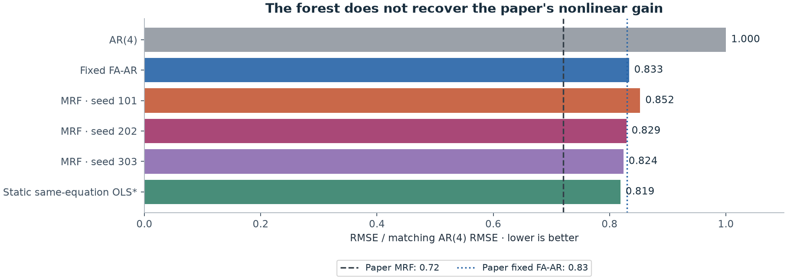
All 48 quarters and all seeds. Fixed FA-AR is 0.833; MRF is 0.824–0.852, not 0.72. *Same-equation OLS is a new post-hoc control with the MRF's four slope terms, not the paper's nine-coefficient FA-AR or a replacement primary. PNG · SVG
A useful nuance: better MAE, little or no RMSE gain
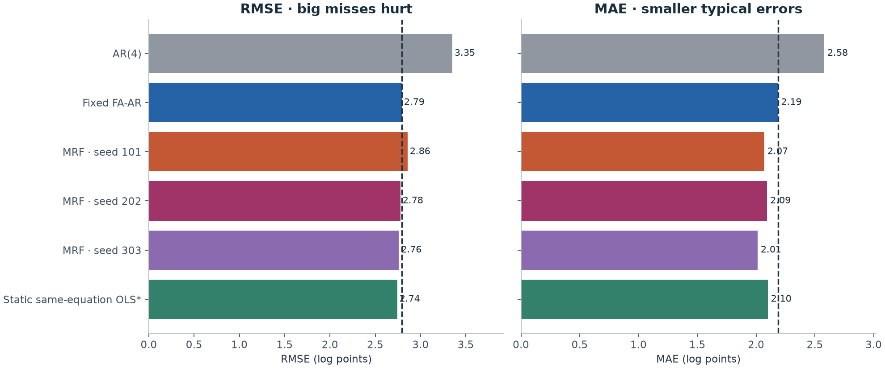
All three MRF seeds have lower MAE than fixed FA-AR and the exploratory static control. They do not uniformly improve the primary RMSE metric. Squaring errors makes rare large misses more costly. The dashed line is each metric's fixed FA-AR value; reporting MAE does not change the primary criterion. PNG · SVG
Actual versus forecast changes
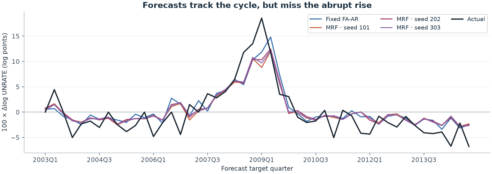
The target is the quarterly change in log unemployment, multiplied by 100 for readability. These are log points, not unemployment-rate percentage-point changes. PNG · SVG
Where the large miss happens
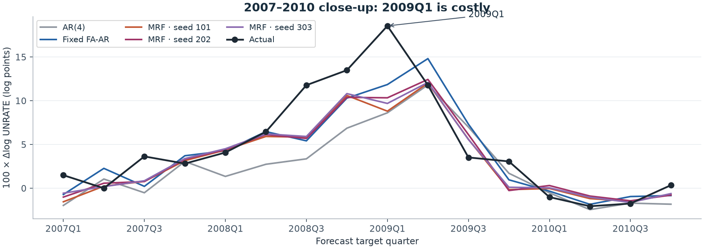
In 2009Q1 the actual log change is 0.1856, fixed FA-AR predicts 0.1185, and MRF predicts 0.0881/0.1034/0.0969. The forest underreacts more than the fixed-factor comparator at this quarter. PNG · SVG
Forecasts in familiar units
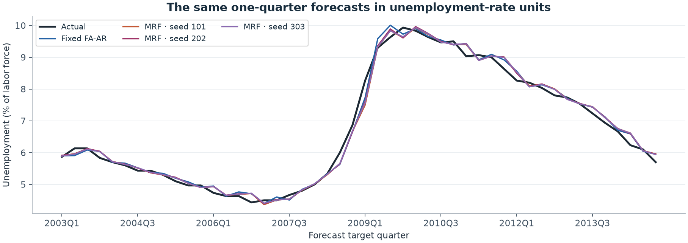
Each level forecast equals the observed previous-quarter unemployment rate × exp(predicted log change). It is a sequence of one-step forecasts with observed lag updates, not a recursive multi-year forecast. Main scoring stays in the original log-change target. PNG · SVG
Rolling forecast error
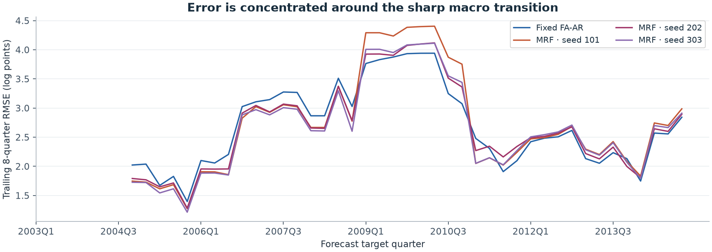
Overlapping trailing eight-quarter windows are descriptive and dependent. They were not used to choose settings, seeds or a favorable evaluation interval. PNG · SVG
When the forest helps or hurts
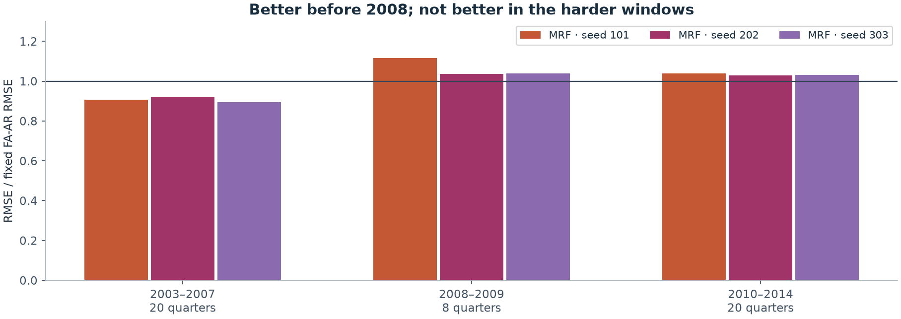
Post-hoc calendar windows, not official recession dates. MRF improves 8–11% before 2008, but has 4–11% higher RMSE in 2008–09 and 3–4% higher RMSE in 2010–14. This is diagnosis, not a newly chosen benchmark. PNG · SVG
Prediction range and underreaction
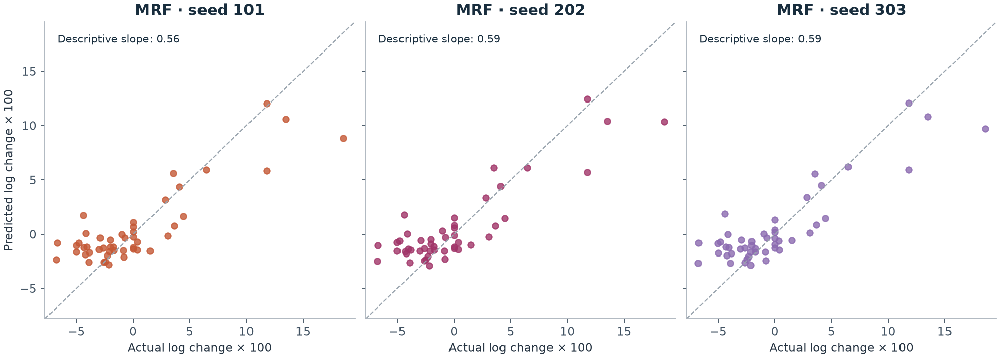
Dashed line is perfect prediction. Slopes regress forecasts on actuals for description only; they are not probability calibration tests or fitted forecast corrections. Only 48 points per panel. PNG · SVG
Errors
Residuals through time
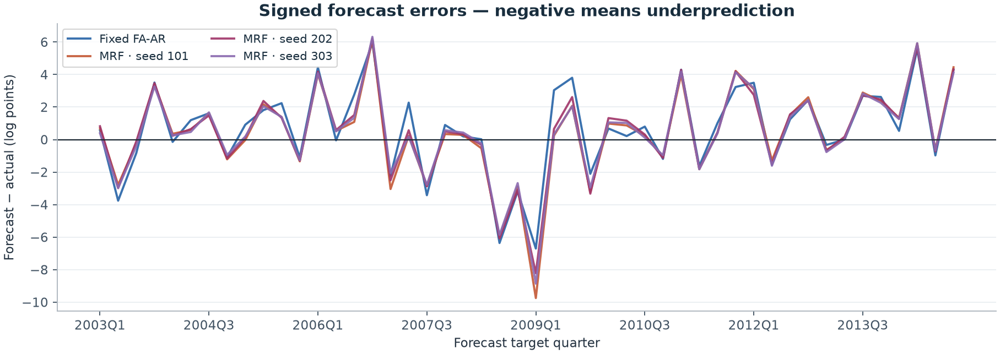
A residual here is forecast minus actual, so negative errors mean the rise in unemployment was underpredicted. All residual plots use held-out target dates. PNG · SVG
Where the squared loss comes from
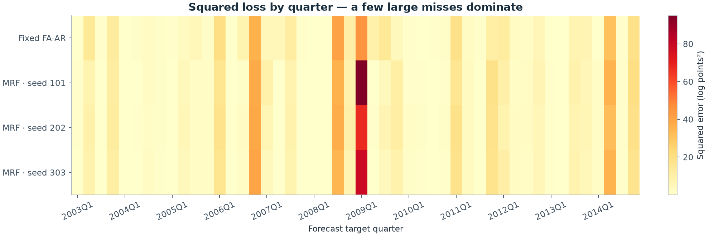
Identical color scale for every method. No normalization within rows; this preserves the magnitude of unusually costly quarters. PNG · SVG
How small wins and large losses accumulate
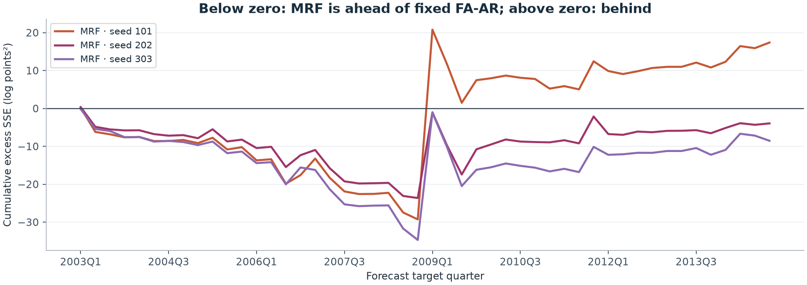
This accumulates each seed's squared error minus fixed FA-AR squared error. It is not a sequential model-selection rule. The 2009Q1 jump offsets many earlier gains. PNG · SVG
The six most expensive relative misses per seed
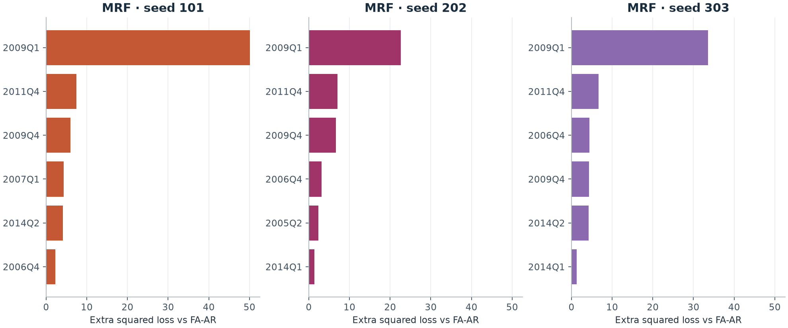
Quarters are ranked after observing results, solely to locate failures. These are individual contributions to total excess squared loss, not independently selected test tasks. PNG · SVG
Do errors depend on the forecast size?
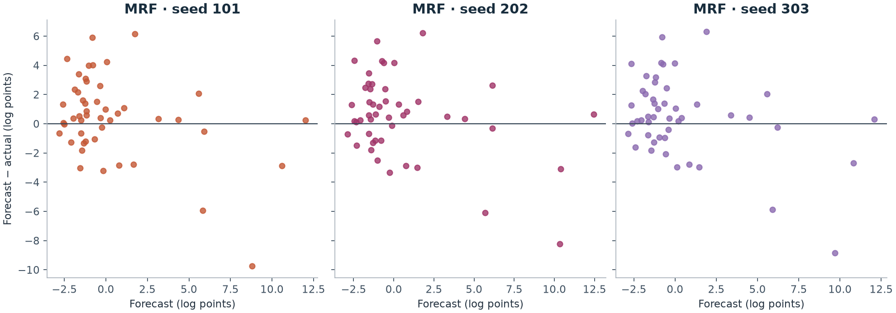
Residual-versus-fitted diagnostic, using held-out forecasts. Patterns may reflect rare regimes or misspecification; this small sample cannot identify a unique cause. PNG · SVG
Tails and unusual errors
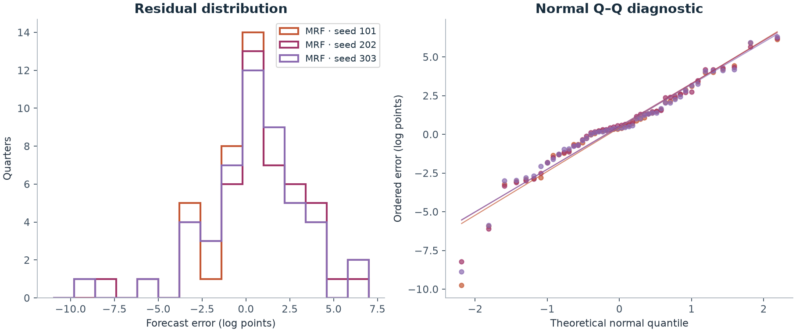
Only 48 held-out quarters. Q–Q lines describe the empirical error distribution, not an assumed Gaussian predictive distribution or a calibrated interval. PNG · SVG
Is forecast error serially structured?
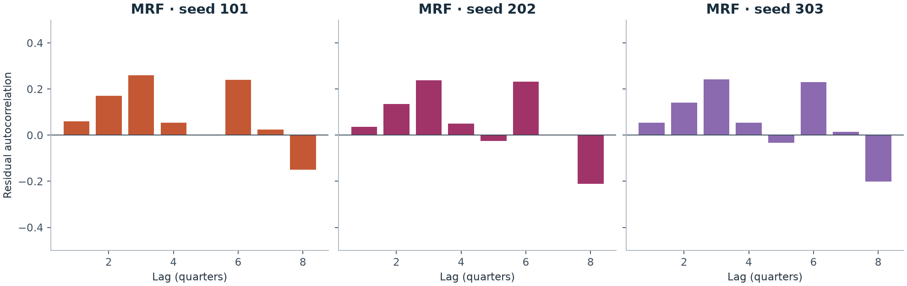
Descriptive autocorrelations, with denominator equal to the full centered error sum of squares. No iid significance bands or multiple-testing claims are added to this 48-quarter sample. PNG · SVG
Inside the forecast
All five changing coefficients
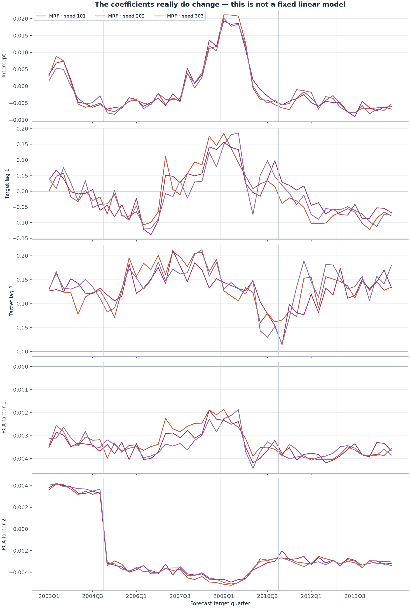
Units are the saved original-scale coefficients; the intercept is in Δlog units. Vertical lines mark refits. PCA factors are refitted and can change sign/rotation: F1/F2 coefficients across boundaries are not an invariant economic quantity or a causal effect. PNG · SVG
What actually contributes to each forecast
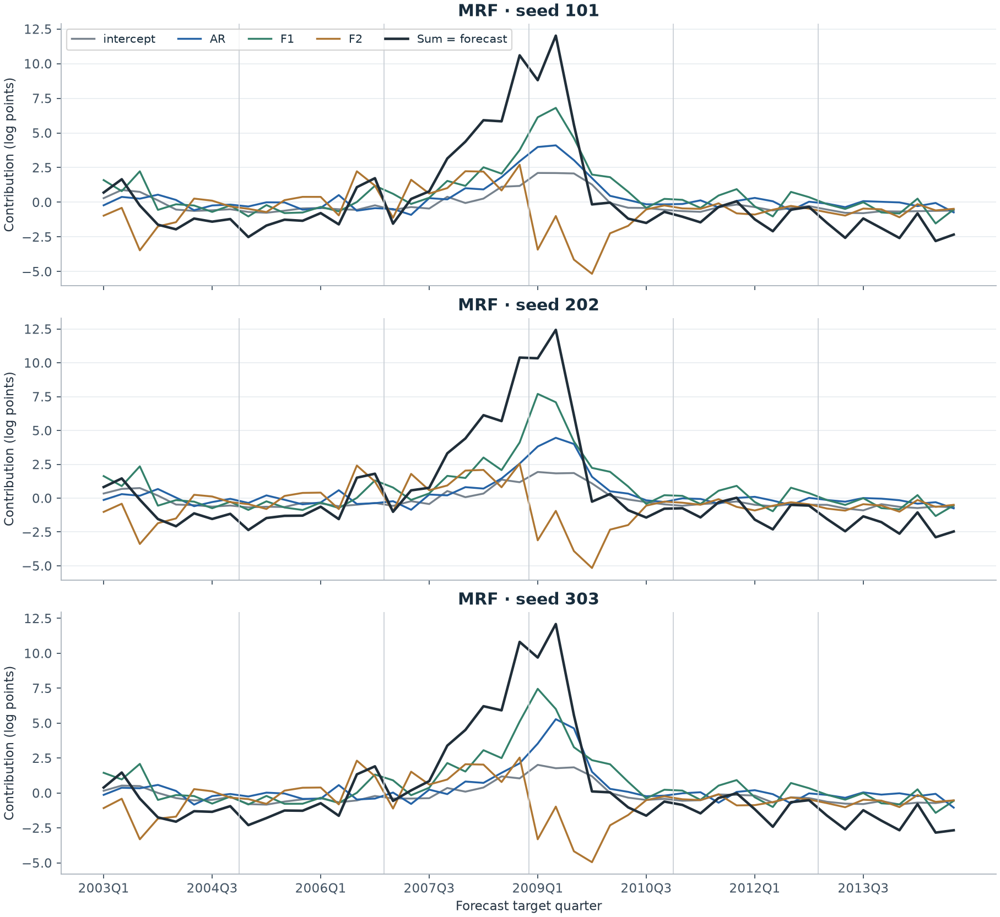
These terms sum to every saved forecast within numerical precision. Contributions are predictive accounting, not causal attribution. The individual F1/F2 decomposition is tied to each refit's PCA basis. PNG · SVG
What the nonlinear model changes versus its own static equation
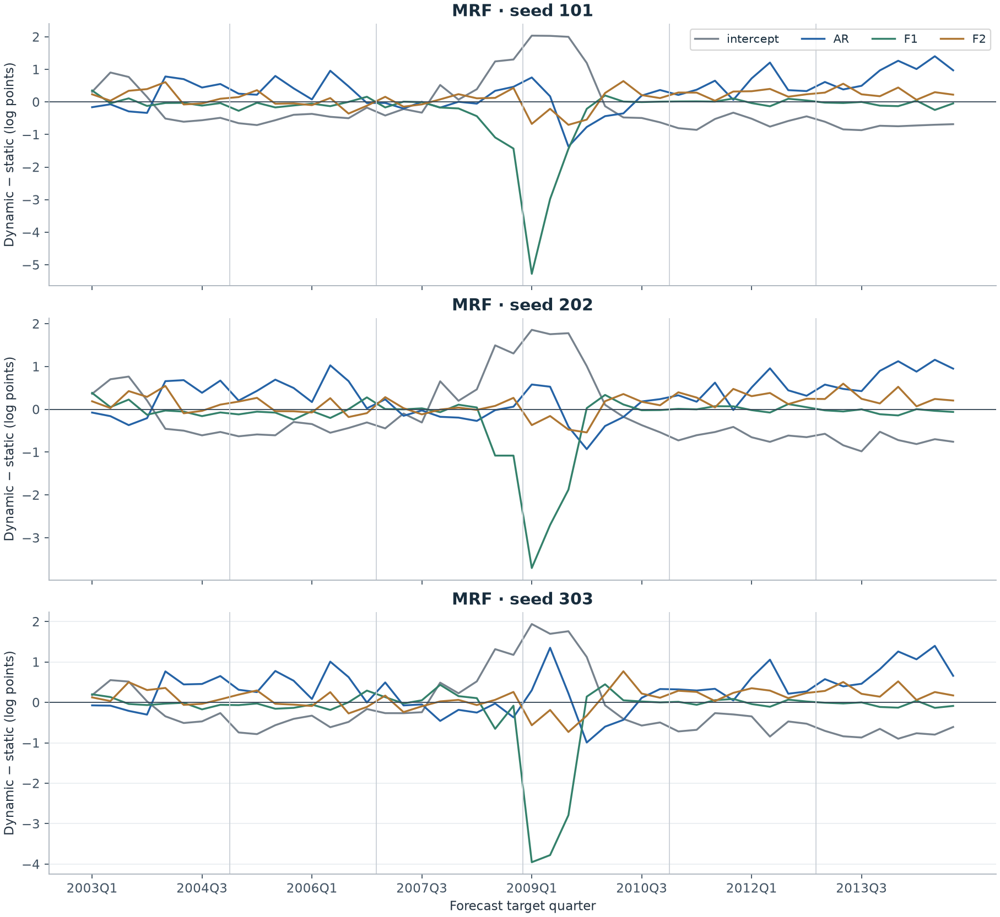
Post-hoc same-equation OLS isolates the addition of dynamic fitting more closely than the larger paper FA-AR equation. MRF has 0.6–4.1% higher RMSE than this control. No model was refitted using test outcomes, and this control does not replace the preregistered benchmark. PNG · SVG
Which indicators enter the two equation factors?
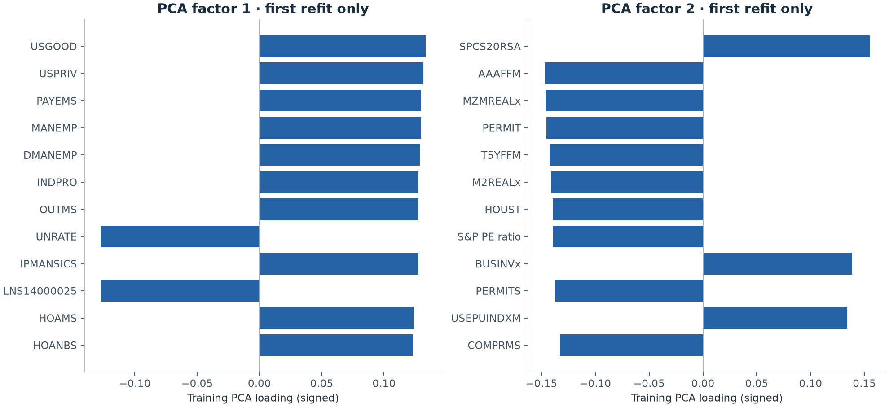
Twelve largest absolute loadings in the first refit (through 2002Q3 origin data). Signs are conventional, and PCA factors are statistical summaries, not identified structural causes or validated economic labels. PNG · SVG
Stability
Seed sensitivity versus the common forecasting error
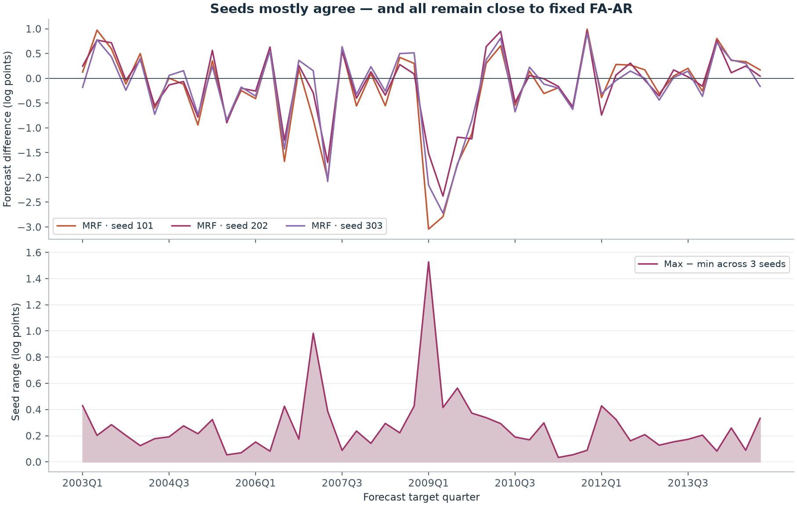
The three seeds' forecasts correlate above 0.997 with one another. Narrow seed spread is not calibrated uncertainty: all seeds can make the same large mistake. PNG · SVG
Performance by refit block
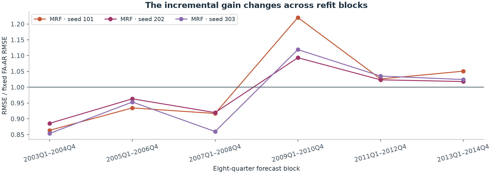
Only eight targets per block, so these ratios are noisy. They locate instability; they do not prove a regime mechanism or authorize choosing a different model in each block. PNG · SVG
Instrumented replay
Training loss versus number of trees
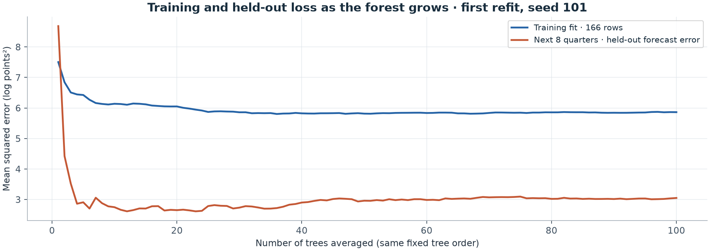
New storage-only replay: first refit, seed 101, all 100 trees. Final forecasts and all coefficients match the original saved fit. The training curve is in-sample and optimistic; the orange curve is the already-observed next eight test quarters. Neither curve is a new validation set or a rule for selecting the tree count. Test and training periods have different difficulty. PNG · SVG
How averaging more trees changes each forecast
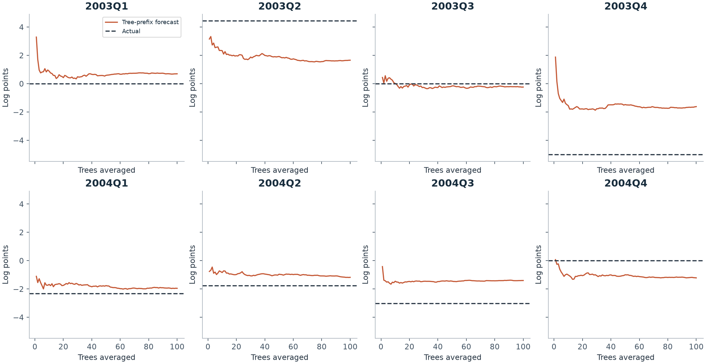
The eight forecasts from the same first-window replay. Trees are added in their original random order, not trained to correct previous trees' residuals. The fixed 100-tree choice is unchanged. PNG · SVG
The distribution of individual tree forecasts
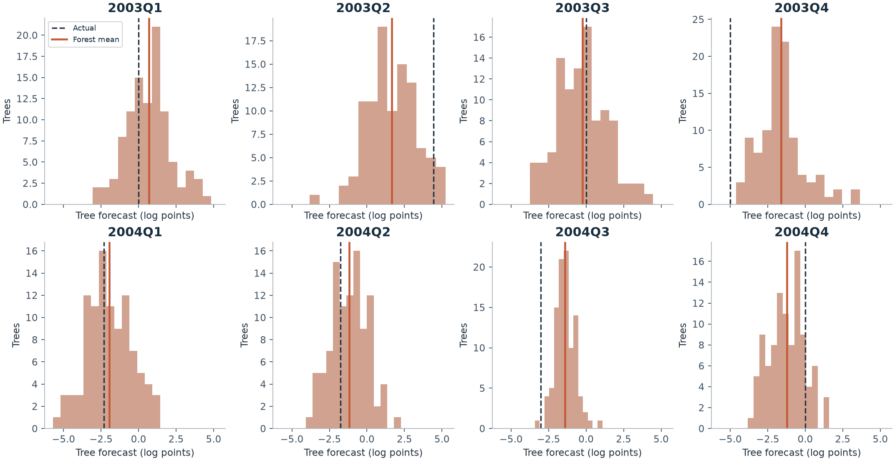
These are 100 correlated model components from one fit, not 100 independent future outcomes. Tree dispersion is not a posterior, prediction interval or calibrated confidence band. PNG · SVG
How complex are the fitted trees?
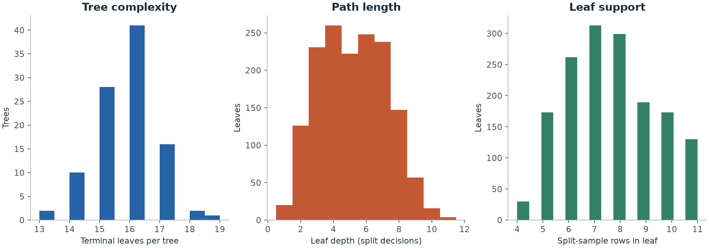
Retained trees from the first-window replay only. NOBS counts rows used in the split sample, not every training outcome used by the final leaf regression or its neighboring-row smoother. PNG · SVG
What the trees actually split on
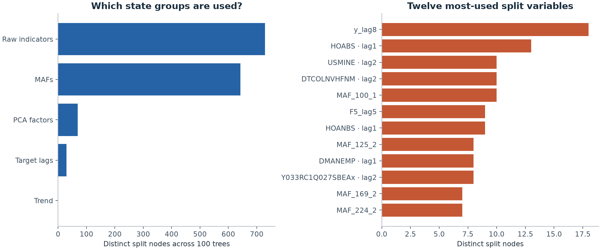
Usage frequency, not permutation importance or causal attribution. More numerous groups have more opportunities; correlated features can substitute for each other. Ancestor splits shared by leaves are counted once per tree node. PNG · SVG
Data and verification
| model |
n |
RMSE |
MAE |
RMSE_over_AR4 |
| AR(4) |
48 |
0.033502 |
0.025810 |
1.000000 |
| Fixed FA-AR |
48 |
0.027919 |
0.021871 |
0.833344 |
| MRF · seed 101 |
48 |
0.028560 |
0.020712 |
0.852479 |
| MRF · seed 202 |
48 |
0.027771 |
0.020945 |
0.828921 |
| MRF · seed 303 |
48 |
0.027598 |
0.020142 |
0.823770 |
| Static same-equation OLS* |
48 |
0.027422 |
0.021005 |
0.818514 |
*Static same-equation OLS is exploratory, with an intercept, two target lags, and two lagged PCA factors. The source fixed FA-AR has nine coefficients.
Original predictions · Original metrics · Original full audit · Diagnostic provenance · Metrics including exploratory OLS · Coefficients · Contributions
Sources: Goulet Coulombe (2024); pinned author engine; FRED-QD archive. The GPL engine is external and unmodified, not redistributed under this repository’s MIT license.